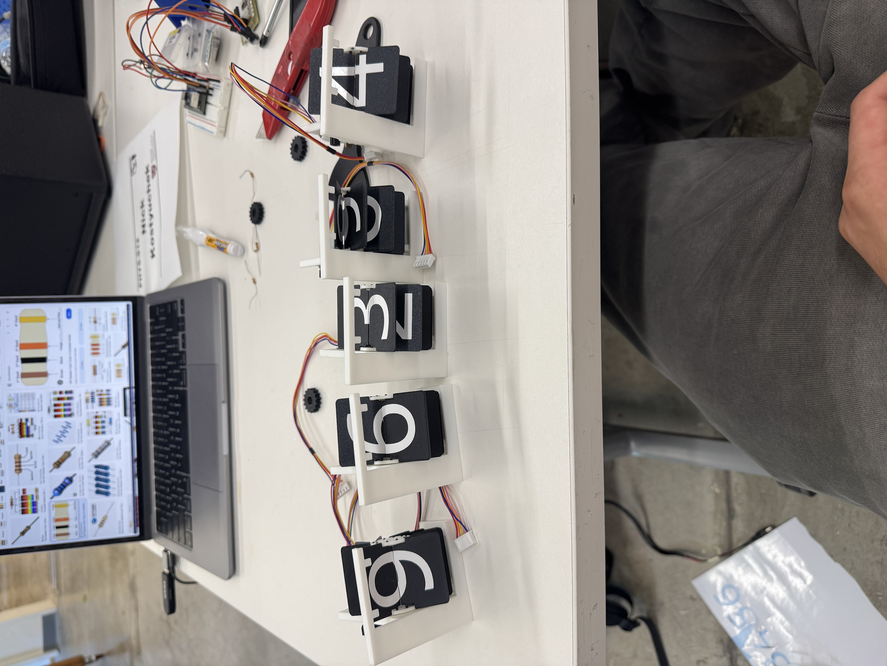

On boot, each digit homes on the hall sensor edge and then jumps to the most recent value in Firebase. New Shopify orders trigger an increment.
Build Story — step by step
I started with a one‑digit MVP to lock in mechanics and firmware (homing, stepping, absolute target display).
1) Print all parts
After validating the MVP, I printed the full set for four digits: flap wheels, gears, frames, hubs, caps. It’s modular — each digit is a copy‑paste module.

Fresh off the printer, then dry‑fit on the bench.
2) Vinyl‑cut the numbers
Clean numerals on both sides of every flap. Consistent alignment is what makes it feel like a “real” split‑flap.
3) Assemble digits (steppers + hall sensors + magnets)
Each digit = 28BYJ‑48 + ULN2003 driver + A3144 hall sensor + small magnet on the wheel. Hall modules and drivers are powered from a common 5 V supply; all grounds are tied together. The hall sensors aren’t level‑shifted — just standard 5 V modules with common ground feeding ESP32 input‑only pins.
Pin map (my build)
Motors IN1..IN4 — Thousands: 19,23,22,21 · Hundreds: 16,17,5,18 · Tens: 27,14,4,13 · Ones: 32,33,25,26
Halls — Thousands: 39 · Hundreds: 36 · Tens: 34 · Ones: 35 (input‑only pins on ESP32)
4) Wire it up
Built a harness for four drivers + four halls, tested each digit. I did short one driver (RIP), swapped it, and kept going.
5) Laser‑cut the enclosure
Simple plywood box; modules hot‑glue in flush with wiring tucked behind. Still need a clean panel‑mount hole for the power jack, but the structure is sturdy and serviceable.
6) Drop everything in the box
With wiring cleaned up, everything dropped in and lined up nicely. Looks legit and is easy to service.
7) Calibrate & final behavior
On boot, all digits home, nudge past the magnet edge for repeatability, then jump to the Firebase value. Editing /shopify/orderCount live updates the display.
ESP32 Firmware (full)
#include <WiFi.h>
#include <FirebaseESP32.h>
#include <Preferences.h>
#define WIFI_SSID "MAKERSPACE"
#define WIFI_PASSWORD "12345678"
#define FIREBASE_HOST "shopify-counter-688ee-default-rtdb.firebaseio.com"
#define FIREBASE_AUTH "fb4973afa5c5432a4a51b2fc02b43eb4c97018ed"
// ----- Firebase -----
FirebaseData fbdo;
FirebaseAuth auth;
FirebaseConfig config;
// ----- NVS -----
Preferences prefs;
// digit index: 0=thousands, 1=hundreds, 2=tens, 3=ones
// motors (ULN2003 IN1..IN4)
const int motorPins[4][4] = {
{19, 23, 22, 21}, // thousands
{16, 17, 5, 18}, // hundreds
{27, 14, 4, 13}, // tens
{32, 33, 25, 26} // ones
};
// halls (A3144 modules -> 5V modules feeding ESP32 input-only pins)
const int hallPins[4] = {39, 36, 34, 35}; // TH, H, T, O
const bool HALL_ACTIVE_LOW = true;
// motion params (tune stepsPerDigit per wheel if needed)
int stepsPerDigit[4] = {420, 420, 420, 420};
const int stepIntervalMs = 2; // stepping speed (bigger = slower)
const int homeNudgeSteps = 6; // small push after leaving magnet
// half-step
const int halfStep[8][4] = {
{1,0,0,0},{1,1,0,0},{0,1,0,0},{0,1,1,0},
{0,0,1,0},{0,0,1,1},{0,0,0,1},{1,0,0,1}
};
// state
int currentDigits[4] = {0,0,0,0};
int lastShown = 0;
unsigned long lastPoll = 0;
const unsigned long firebaseInterval = 800;
// ------------- helpers -------------
inline void drivePhase(int d, int phase){
for (int i=0;i<4;i++) digitalWrite(motorPins[d][i], halfStep[phase][i]);
}
inline void motorOff(int d){
for (int i=0;i<4;i++) digitalWrite(motorPins[d][i], LOW);
}
inline bool hallActive(int d){
int v = digitalRead(hallPins[d]);
return HALL_ACTIVE_LOW ? (v == LOW) : (v == HIGH);
}
// blocking step (ONE DIGIT ONLY)
void stepForward(int d, int steps){
for (int s=0; s<steps; s++){
drivePhase(d, s % 8);
delay(stepIntervalMs);
}
motorOff(d);
}
// home a single digit (blocking)
bool homeDigit(int d){
Serial.printf("🔧 Homing digit %d…\n", d);
long s = 0;
unsigned long t0 = millis();
// seek magnet
while (!hallActive(d)){
drivePhase(d, s % 8); s++; delay(stepIntervalMs);
if (millis() - t0 > 8000){ Serial.println(" ⚠️ timeout seeking magnet"); motorOff(d); return false; }
}
// leave magnet
t0 = millis();
while (hallActive(d)){
drivePhase(d, s % 8); s++; delay(stepIntervalMs);
if (millis() - t0 > 3000){ Serial.println(" ⚠️ timeout leaving magnet"); motorOff(d); return false; }
}
stepForward(d, homeNudgeSteps);
currentDigits[d] = 0;
motorOff(d);
Serial.printf(" ✅ digit %d homed at 0\n", d);
return true;
}
// home all digits SEQUENTIALLY (one-by-one)
void homeAll(){
for (int d=0; d<4; d++){
homeDigit(d);
}
}
// convert number to 4 digits
void numberToDigits(int value, int out[4]){
if (value < 0) value = 0;
if (value > 9999) value = 9999;
out[0] = (value / 1000) % 10;
out[1] = (value / 100) % 10;
out[2] = (value / 10) % 10;
out[3] = value % 10;
}
// move ONE digit from current to target (forward only)
void showDigit(int d, int targetDigit){
int delta = (targetDigit - currentDigits[d] + 10) % 10;
if (delta){
stepForward(d, delta * stepsPerDigit[d]);
currentDigits[d] = targetDigit;
}
}
// show number SEQUENTIALLY: thousands -> hundreds -> tens -> ones
void showNumber(int value){
int tgt[4]; numberToDigits(value, tgt);
for (int d=0; d<4; d++){
showDigit(d, tgt[d]); // one digit at a time
}
lastShown = value;
prefs.putInt("lastShown", lastShown);
}
// ------------- setup / loop -------------
void setup(){
Serial.begin(115200);
// IO
for (int d=0; d<4; d++){
for (int i=0;i<4;i++){ pinMode(motorPins[d][i], OUTPUT); digitalWrite(motorPins[d][i], LOW); }
pinMode(hallPins[d], INPUT);
}
// WiFi
WiFi.begin(WIFI_SSID, WIFI_PASSWORD);
while (WiFi.status() != WL_CONNECTED){ delay(250); Serial.print("."); }
Serial.println("\\n📶 WiFi connected");
// Firebase
config.database_url = FIREBASE_HOST;
config.signer.tokens.legacy_token = FIREBASE_AUTH;
Firebase.begin(&config, &auth);
Firebase.reconnectWiFi(true);
// restore last
prefs.begin("counter", false);
lastShown = prefs.getInt("lastShown", 0);
Serial.printf("🔁 Restored lastShown=%d\\n", lastShown);
// home sequentially, then go to lastShown, then sync to current cloud value
homeAll();
showNumber(lastShown);
if (Firebase.getInt(fbdo, "/shopify/orderCount")) {
int now = fbdo.intData();
showNumber(now);
}
}
void loop(){
// poll Firebase (ABSOLUTE number)
if (millis() - lastPoll >= firebaseInterval){
lastPoll = millis();
if (Firebase.getInt(fbdo, "/shopify/orderCount")){
int target = fbdo.intData();
if (target != lastShown){
Serial.printf("🎯 %d → %d\\n", lastShown, target);
showNumber(target); // one digit at a time
}
}
}
}
Webhook Server (full)
const express = require('express');
const bodyParser = require('body-parser');
const admin = require('firebase-admin');
const crypto = require('crypto');
const app = express();
// Verify Shopify webhook signature
function verifyShopifyWebhook(req, res, buf) {
const hmacHeader = req.get('X-Shopify-Hmac-Sha256');
const generatedHmac = crypto
.createHmac('sha256', process.env.SHOPIFY_WEBHOOK_SECRET)
.update(buf, 'utf8')
.digest('base64');
if (generatedHmac !== hmacHeader) {
throw new Error('Webhook signature mismatch');
}
}
// Middleware
app.use(bodyParser.json({ verify: verifyShopifyWebhook }));
// Firebase config
const serviceAccount = {
type: "service_account",
project_id: process.env.FIREBASE_PROJECT_ID,
private_key: process.env.FIREBASE_PRIVATE_KEY.replace(/\\n/g, '\\n'),
client_email: process.env.FIREBASE_CLIENT_EMAIL,
token_uri: "https://oauth2.googleapis.com/token",
};
admin.initializeApp({
credential: admin.credential.cert(serviceAccount),
databaseURL: 'https://shopify-counter-688ee-default-rtdb.firebaseio.com',
});
const db = admin.database();
// Webhook endpoint
app.post('/webhook', async (req, res) => {
const order = req.body;
const filteredData = {
order_id: order.id,
created_at: order.created_at,
email: order.email,
name: order.name,
total_price: order.total_price,
currency: order.currency,
line_items: (order.line_items || []).map(item => ({
title: item.title,
quantity: item.quantity,
price: item.price,
})),
shipping_address: order.shipping_address
? {
name: order.shipping_address.name,
address1: order.shipping_address.address1,
city: order.shipping_address.city,
zip: order.shipping_address.zip,
province: order.shipping_address.province,
country: order.shipping_address.country,
}
: null,
};
console.log('✅ Order received:', filteredData);
try {
await db.ref('shopify/orders').push(filteredData);
await db.ref('shopify/orderCount').transaction(current => (current || 0) + 1);
res.status(200).send('OK');
} catch (err) {
console.error('❌ Firebase error:', err);
res.status(500).send('Error');
}
});
const PORT = process.env.PORT || 3000;
app.listen(PORT, () => console.log(\`🚀 Server running on port \${PORT}\`));